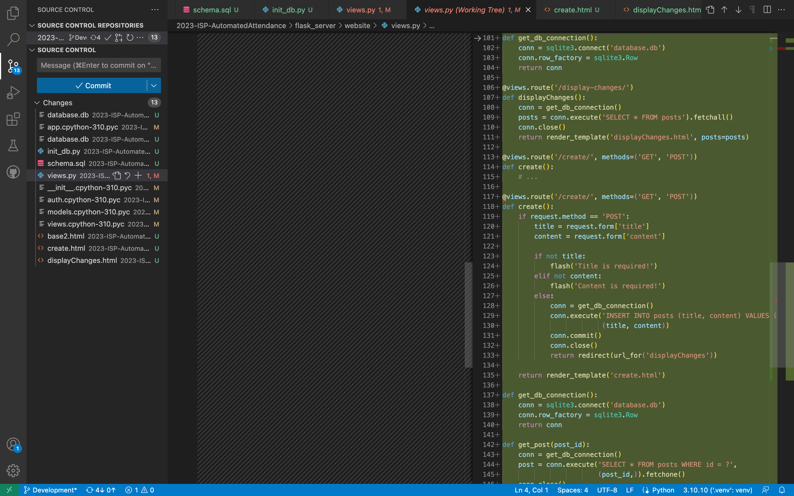
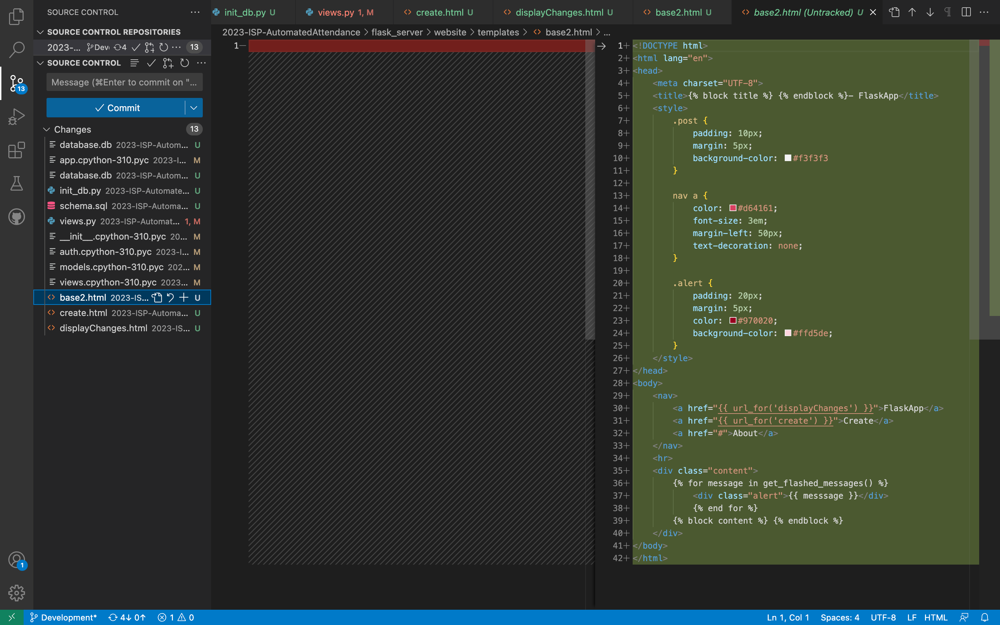
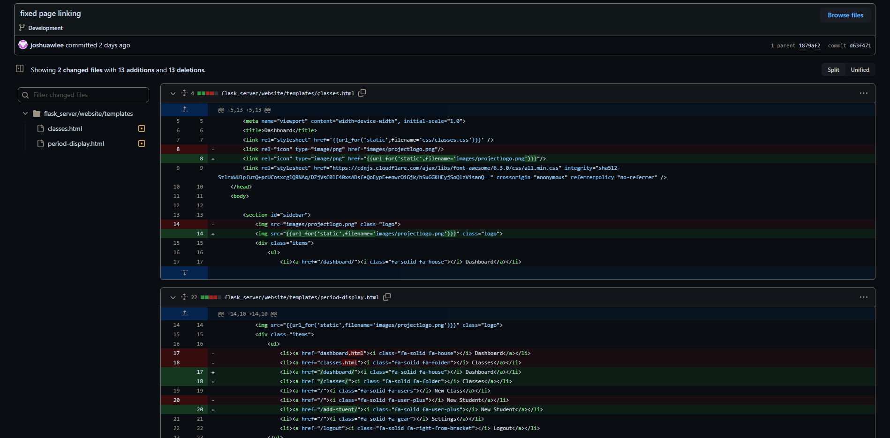
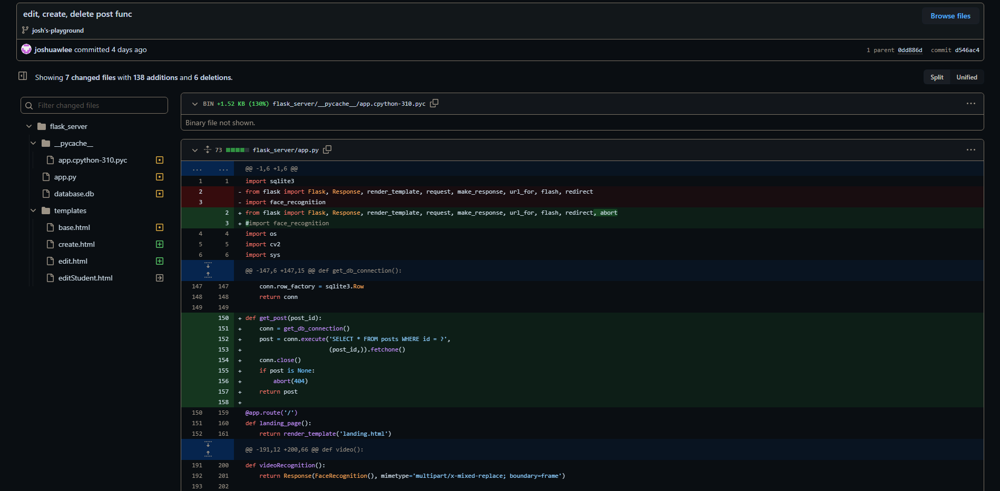
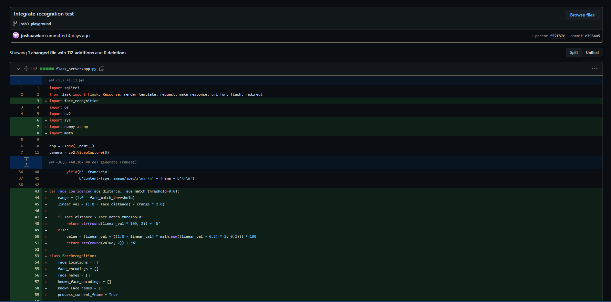
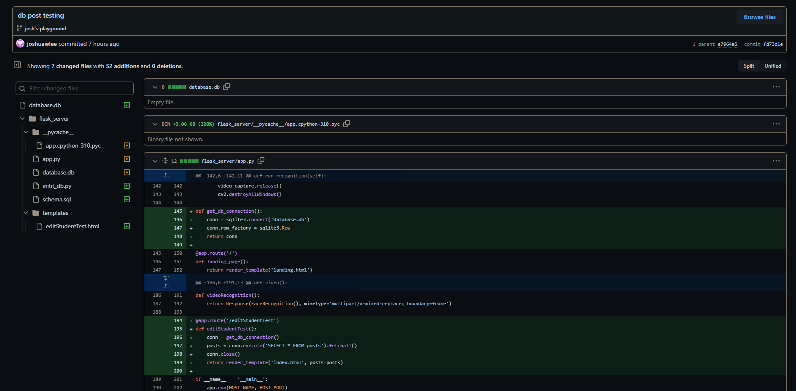
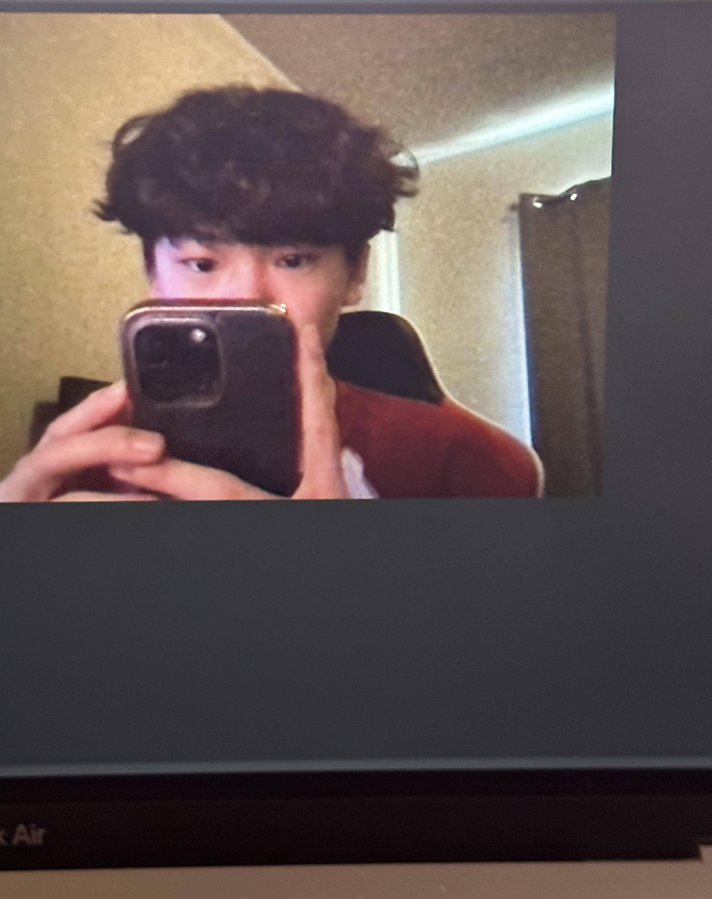

Digital Portfolio
1-May-2023
Plan
This issue will add functionality to our webpage by allowing users to add/remove/edit/create students on the webpage which will directly alter values in the database.
This week I hope to implement and resolve issue 77 so that I can add the remove/add/create/edit student feature to our project. This is crucial to our project as our product will be lacking a major feature without this functionality. In order to accomplish this I plan to finish up developing the function for this feature then implementing it into our website. I may have to take things one step at a time and work on implementing it into our website next week.
Significant Achievements

Although I was not able to commit these changes I made due to possibly breaking our currently working product, I made changes in order to attempt to integrate my previously created function for create/edit/delete students into our website. This screenshot shows part of what I would have committed if I had finished properly integrating the function. The code displayed shows my attempt at moving the functions into the pages that we already had existing but I ran into an error on line 117 that I could not figure out as I believe it to be an issue with flask that I am unfamiliar with. Although the code is similar to the code I had previously wiht my working function, it seems to be giving me an error here despite not having any errors that I can see. I hope to get some assistance from the QA engineers on this error. My would have been commit makes progress towards adding extra functionality to our project that would provide users with more convenience as it would allow users to add/remove/edit/create students without having to directly update the database themselves. Although I was not able to finish implementing this to our working webpages, I plan on hopefully finishing it over the weekend to have it ready for the final presentation.

Although I was also not able to commit these changes I made due to possibly breaking our currently working product, I made these changes in order to attempt integrate my previously created page with the working function for create/edit/delete sutdents into our pages with css. This screenshot displays my use of jinja2 and html in order to extend pages and link them to this main page. This process was quite difficult because I had to learn how to use jinja2 from scratch but I believe that I am close to figuring out how to finalize this integration of the function to the webpage. I hope to gain assistance from the QA engineers or other development engineers if I run into any troubles with how to integrate my function through the use of flask or jinja2 as these are both two unfamiliar languages to me. My would have been commit makes progress towards our final product as it will provide extra functionality to our project as it woudl provide users with a webpage to directly add/remove/edit/create students without having to directly update the database themselves. This is useful most of our users would not be tech savy people. Although I was not able to finish the implementing of the function, I hope to finish it over teh weekend to have it ready for the final presentation.
This is a step towards our end goal for the ISP as I have made huge progress towards developing a useful function in our final product. This feature would be nice to have as teachers will not be able to make necessary changes to their classes or students without directly updating the database without this feature. This will result in a loss in functionality which will ultimately diminish the effects that we hope to have with our product. This is due to the fact that a majority of our users will not have a technological background to possess the knowledge of how to update a database. Furthermore, this would prove to be a very time consuming and tedious task without the function. In order to take the final steps towards completing my task, I need to finish implement these features into our actual webpages rather than the temporary ones I developed.
Challenges
Scheduling Challenges
This week I am yet again facing severe scheduling issues with studying as I have three ap exams coming up. This will take up a lot of my time, which ultimately takes away time from me being able to work on the ISP project. On top of this I have been assigned more homework from this class to also do which has been a huge burden on my already busy schedule. I hope that I can resolve this issue by managing my time wisely in class and out of class to find time to work on the project.
24-Apr-2023
Plan
This issue will add functionality to our webpage by allowing users to add/remove/edit/create students on the webpage which will directly alter values in the database.
This week I hope to implement and resolve issue 77 so that I can add the remove/add/create/edit student feature to our project. This is crucial to our project as our product will be lacking a major feature without this functionality. In order to accomplish this I plan to finish up developing the function for this feature then implementing it into our website. I may have to take things one step at a time and work on implementing it into our website next week.
Significant Achievements

While working on issue 77, I noticed some errors within the pages I was working with. These pages had errors with linking as our group had not updated the pages to be correctly linked to our flask server pages. I resolved this issue by fixing these minor errors and correctly linking the pages. This allowed for the buttons to correctly take me to the designated pages and the images to load on the webpage.

I successfully created this function through the use of jinja2, a template engine for Python that allows python to be implemented into html, and the POST function. I created a temporary page to house this function that has a page that displays all of the POSTS (along with details such as the time they were posted and its contents), a page that allows you to edit/delete POSTS, and a page that allows you to add a POST. On top of this, I have developed an alert system that notifies users about any deletions made. To further ensure the user understands their actions, I also added a confirmation pop up that asks users if they are sure they want to remove a POST. Now that I have developed these temporary pages and the function, I simply need to implement this into our webpage for the product.
This is a step towards our end goal for the ISP as I have made huge progress towards developing a key function in our final product. This feature is crucial as teachers will not be able to make necessary changes to their classes or students without the feature. This will result in a loss in functionality which will ultimately diminish the effects that we hope to have with our product. In order to take the final steps towards completing my task, I need to implement these features into our actual webpages rather than the temporary ones I developed.
Challenges
Scheduling Challenges
This week I am yet again facing scheduling issues with studying as the ap exams are coming up. This will take up a lot of my time, which ultimately takes away time from me being able to work on the ISP project. I believe that I can resolve this issue by managing my time wisely in class and out of class to find time to work on the project.
17-Apr-2023
Plan
Adds functionality to our webpage for our product as it will allow our facial recognition software to run on the live camera.
Adds functionality to our webpage by allowing users to add/remove students on the webpage which will direclty alter the database.
Significant Achievements

I attempted to integrate our recognition software into our flask webpage with the live camera, but I was completely successful. My method of integration ran without any errors but wasn't able to call the recognition function. This commit helped me reach my goals for the week because it displays progress towards having the recognition software work on the webpage as I was able to integrate the software despite not being able to call that software on the webpage.

I am working on creating a function that utilizes posts to use an SQLite database through our flask webpage. With this function I have the goal of creating a function that will allow users to add/remove studentsthrough the webpage which will directly update the database. This commit helped me reach my goals for the week because I was able to successfully display posts and add posts on the webpage. Now I just need to utilize this post feature to be able to create the function that will allow users to add/remove students from the database through the webpage.
Challenges
Technical Challenges
This week I faced some technical issues with integrating the recognition software to the working camera webpage on our dashboard page. The recognition software doesn't run on mac as I was running into issues with downloading dlib and the software seemed to be crashing the webpage when it was running. These issues are something that I have not yet figured out but my teammate will pick up on. To resolve this issue, my group member picked up where I left off and I took up a new issue to work on instead.
Scheduling Challenges
This week I am starting to face scheduling issues with studying as the ap exams are coming up. This will take up a lot of my time, which ultimately takes away time from me being able to work on the ISP project. I believe that I can resolve this issue by managing my time wisely in class and out of class to find time to work on the project.
Interpersonal Chalenges
This week we did not have any interpersonal challanges as we have been more collaborative in order to get more commits out and work towards finishing our project. I think that our project manager did a good job with taking initiative and assigning tasks for each member and ensuring everyone is taking part in our project. This allowed us to avoid any interpersonal challenges as we were all content with our workload.
10-Apr-2023
Challenges
Technical Challenges
This week I faced some technical issues with integrating the working camera webpage into our existing dashboard page. This issue exists because python isn%apos;t able to run on html. I overcame this issue through the use of jinja2. Jinja2 is a templating language for python that is able to extend an html page to run a page with python. Through the implementation of jinja2 I was able to successfully integrate the working camera into the dashboard page.
Scheduling Challenges
This week I faced minor scheduling challenges as we had a shorter week due to our four day weekend. This yet again led to a lack of motivation as we just came back from a break and into a shorter week of school. We didn't suffer too much from this shorter week as we were still able to get our work done with the limited class time we had this week. We can continue this productivity as the project comes to a close in order to guarantee a good final product.
Interpersonal Chalenges
This week we did not have any interpersonal challanges as we have been more collaborative in order to get more commits out and work towards finishing our project. I think that our project manager did a good job with taking initiative and assigning tasks for each member and ensuring everyone is taking part in our project. This allowed us to avoid any interpersonal challenges as we were all content with our workload.
Significant Achievements
3-Apr-2023
Challenges
Technical Challenges
This week I faced some technical issues with integrating our facial recognition software into our flask camera on the web. This issue is something that I have yet to resolve as I have been struggling to find solutions online and come up with any on my own. I have been attempting to overcome this challenge by testing and messing around with code in order to eventually figure out the integration of the software.
Scheduling Challenges
This week we faced minor scheduling challenges as we had a shorter week due to our four day weekend. This led to a lack of motivation as we longed for our break from school. We did not suffer from a cut from our class time this week but we did have some slacking off as we approached the break. We overcame this issue by collaborating and encouraging each other to get work done.
Interpersonal Challenges
This week we did not have any interpersonal challenges as we all have been working well together. The only issue I believe our group has is with our member in a different class period. It is very difficult to collaboritavely work with this team member as we never have class time to work with this member and it is hard to find a time to work together outside of school. This issue has persisted throughout the project but we plan on overcoming this issue by communicating through one of our team members that knows the team member outside of our class period very well.
Significant Achievements
27-Mar-2023
Challenges
Technical Challenges
This week I faced some technical issues with the camera implementation as I was very unfamiliar with flask. Flask runs completely different from anything that I have previously worked with which led to some intial difficulties with running my programs but I believe that I overcame some of these issues as I discussed with group members. These issues may persist for a bit as our team attempts to figure out flask but we will slowly but surely overcome this issue as we work together to research and experiment with flask.
Scheduling Challenges
This weeks scheduling challenges came yet again from time management as I particularly had a lot of homework that had me staying up really late to finish. This left me with little time to work on any of th ISP project. Despite the little time I had, I still managed to find time as I communicated with group members on what tasks needed to be done.
Interpersonal Challenges
This week we yet again had some issues with contributions as the school year has been coming to a close. This is only natural as all of us students become lazier or more preoccupied with studying as many tests are coming up for us to take. This is a simple yet impactful issue as it takes away from our productivity. This can be resolved by working together to overcome this lack of productivity as we can communicate and push each other to work harder.
Significant Achievements

*Hardware testing* Program is able to run on a Mac (local camera)
20-Mar-2023
Challenges
Technical Challenges
I believe that we did not run into many technical challenges other than flask. Our group has been experimenting with flask as it has the capabilities to be able to use SQLite and python which are two components that our project has been using up until now. This led to our decision on using this software to run our project. The only issue with flask is that no one in our group is familiar with the program which led to us being unsure of how it functions. We can overcome this issue by researching and experimenting together to figure out flask.
Scheduling Challenges
This weeks scheduling issues circled around school work yet again. This was seen especially with the CSII people as we had a Lindenmayer assignment that stumped many of us. This took away from the class time we were provided and ultimately took away from the time we could work on the ISP project. This was on top of the other school activities and homework from other classes that many people had. As usual, I believe that we can overcome this through communication and work outside of school to catch up on lost time.
Interpersonal Challenges
I think that the only interpersonal issues our group had are contributions as members of our group are constantly busy with other activities or work. This week CSII had our big assignment over the Lindenmayer system which took up most of our time this week, and this led to contribution difficulties. I think we can work this out by communicating and making time to make up for lost time.
Significant Achievements
I conducted research on the methods in which our ISP group can improve facial recognition accuracy through AI or machine learning
13-Mar-2023
Challenges
Technical Challenges
This weeks technical challenges our team has accomplished a lot regarding the database. Although a lot of progress was made there weren't many issues regarding code or tech. The only issue that they ran into was with an error where the functions could not identify a specific photo file when attmpeting to add the database to the other files. We will attempt to research and work to fix this error as we progress.
Scheduling Challenges
This weeks scheduling challenges came from my school work. I had a great deal of tests this week which came with a large homework load as I needed to study for these tests. Furthermore, some of team members were out due to sports activities. These added to the scheduling difficulties that we have previously faced in our project so we will work together and communicate how to make up for lost time as usual.
Interpersonal Challenges
There have been not been many interpersonal issues as I believe that our team has been relatively productive and communicated well with each other. Although there has been a disparity in contributions I hope to see it balance out as we continue on with our project.
Significant Achievements
*These were programs I made on my personal laptop and forgot to commit two weeks ago. I will be using these new versions to compare effeciency.*
27-Feb-2023
Challenges
Technical Challenges
This week I was assigned with the task of implementing our program into our webpage with a live camera. Through research with another team member, we learned that we would need to use Python Scripts rather than normal python code as it can convert code to JavaScript. This conversion is required as JavaScript has better compatability for our website. Currently, we are not very knowledgable in this implementation so we plan on overcoming this issue by further researching this method to hopefully find success soon.
Scheduling Challenges
This we ran into scheduling issues as we had an SAT on wednesday and a half day on friday. This disrupted our class schedule as we only had class on monday. Furthermore, the SAT drained a lot of us Juniors so we had less motivation to get work done as well. Similar to our previous scheduling challenges we just simply compromised and found a work around to continue to make progress. This was accomplished yet again through our communication skills as a group.
Interpersonal Challenges
Just like the previous weeks, I did not have any interpersonal challenges with my group members as we are always able to communicate any issues we have with each other. Our group seems to continue to get along well and work well together as we progress through our project. I am glad to have taken up this project with such a productive group.
20-Feb-2023
Challenges
Technical Challenges
This week we didn't run into many technical issues as we spent a lot of time working on the front end of our project. The main issues we ran into were more so about the design of our front end and how we wanted to make our pages. This resulted into some conflicting ideas about how we each wanted the fornt end to look like, but we were easily able to overcome this issue by simply communicating and voting on what we thought looked best. We ended up coming up with a general color scheme, a logo, some visuals, and the design of most of our pages. This should allow us to have the backbones of our front end finished soon enough as we later add the funcionality later.
Scheduling Challenges
This week we faced some scheduling issues as the school week was shorter than usual with our four day weekend. This gave us less time to collaborate in person and work on our project. Despite this issue, we were still able to accomlish many things in our shortened week. Additionally, we also worked on the project together outside of school through communicating through discord. I believe that this shows that we have improved our collaborative skills and resolved our schedule conflicts.
Interpersonal Challenges
I believe that we didn't have any interpersonal challenges as we have been able to work well together while avoiding any conflicts. We are able to accomplish this by communicating our ideas in a civil manner and giving constructive criticism rather than completely shutting someone else's idea down. I believe that this healthy work environment will allow us to make a lot of progress and accomplish great things together through this project.
13-Feb-2023
Challenges
Technical Challenges
This week we have gotten a finished a good basis of our front end without many technical issues other than making sure we do not override each other's commits. We did face some issues with out github as we made some errors while merging branches. We overcame this issue by researching merges on github and communicating with our team members that are more experienced in github merging. Now that we have resolved these issues, we will know to avoid such mistakes next time we start merging branches again.
Scheduling Challenges
This week we faced some scheduling issues as CS-II had a lot of assignments to finish leading to our CS-II members not being able to commit as much time to the ISP project. We overcame this issue by communicating with each other and finding time to help each other work on the other class assignments to make time to work on the ISP.
Interpersonal Challenges
I believe that our group didn't have any interpersonal challenges as we all worked at our own pace to finish the tasks that were assigned to us. I believe that we improved our interpersonal relations as we have been communicating more and collaborating more on the project. This is strengthening our teamwork which will increase our productivity as a team.
6-Feb-2023
Challenges
Technical Challenges
Since we finished up our layout designs last week, we started browsing for css styles to fit our layout envision. We can into some issues with this as we could not find many styles that fit our need for a simple yet aesthetic user interface. We eventually overcame this challenge by dedicating some more members towards the front end to help work on researching css styles, which eventually led to the beginning of the development of the front end.
Scheduling Challenges
We did not really have any scheduling challenges this week other than myself having to balance my time with my heavy homework load and extracurricular schedule. I continued to overcome this challenge by working ahead to try anything to find the time to work on the ISP project.
Interpersonal Challenges
I believe that our group didn't have any interpersonal challenges as we all worked at our own pace to finish the tasks that were assigned to us. We are slowly starting to improve our communication as we have created a discord server to communicate on. This server will help us with our communication issues which will lead to improved productivity and accuracy when it comes to our project.
30-Jan-2023
Challenges
Technical Challenges
Now that we have planned out how we want our website for our project to look like, we just have to apply this design into code and make it a reality. The only issue with this is that not many of us are particularly good at making a visually appealing front end. We can overcome this challenge by creating a smaller group within our project group to work on the front end together.
Scheduling Challenges
The only scheduling issue we had this week was due to bad weather conditions as we only had one class together before school was cancelled. This limited the communication and work time our group had. We can overcome this issue by organizing group sessions outside of school over a discord call in order to expand our collaborative project work time.
Interpersonal Challenges
I believe that our group didn't have any interpersonal challenges as we all worked at our own pace to finish the tasks that were assigned to us. Although we are currently keeping up with the assignments given to us, I believe that we can improve our effeciency by working more as a group. This can allow us to progress further in the project and achieve a better accuracy for our project.
23-Jan-2023
Challenges
Technical Challenges
This week we actually started working on the technical aspect of our project, so we ran into a couple technical challenges. As we developed our first version of our project, we ran into some issues with our method of uploading our pictures into the file that we designated for testing. Occasionally, the pictures wouldn't register as a photo, which causes errors with our function that checks for and identifies people's faces. We can overcome this challenge by digging further into this issue and finding the cause in order to resolve any inaccuracies with our program. The QA engineers will work together with the software engineers to accomplish this.
Scheduling Challenges
The only scheduling challange I had this week was attempting to find time to work on the project as I have had club meetings and rehearsals to attend on top of the large homework load I had. It was very hard to find any time to contribute to the project. I will overcome this challenge by attempting to work ahead on my school work and squeezing in as much time as possible to work on the project.
Interpersonal Challenges
We did not encounter any interpersonal challenges this week as well, but we are expecting some soon as we advance in our project. As we progress further into the complexities of our project, we will likely run into interpersonal challenges as it is only natural in a group project. We can overcome this challenge by simply keeping up with our communication and understand that we are working as a group rather than individually.
16-Jan-2023
Challenges
Technical Challenges
Although we haven’t run into technical issues as we haven’t done much technical work, we were very productive in mapping out our project. We have planned on implementing databases in order to store and analyze faces of all kinds. Through this process we are expecting to run into many technical challenges. We can overcome these challenges by having the software and QA engineers work together to solve any issues within the software.
Scheduling Challenges
One scheduling challenge that I personally have ran into is due to my cybersecurity competition that is this saturday. This is the semifinals competition in which I can potentially qualify for nationals, so I have had to sacrifice lots of time to prepare for this competition. In order to overcome this challenge I have attempted to work ahead on my homework in order to possibly make time to work on the project.
Interpersonal Challenges
I believe that we haven’t really run into any interpersonal challenges yet as we have not had any struggles while collaborating on this project. One small inconvenience I feel like our group has is a lack of communication as we do not give constant updates on what we are working on or planning on working on. I believe that our group could potentially be even more productive if we improve our communication. We can overcome this challenge by each individually making an effort to keep each other updated on things we are working on or planning to work on.
9-Jan-2023
Challenges
Technical Challenges
Despite being in early stages of the project, we ran into some issues with editing the README.md file. This challenge was partially because many of our group members are not familiar with .md files but also due to the possibility of overwriting another person’s edits to the file. We overcame this challenge by simply researching the basics of .md files and also communicating with each other in order to orderly edit the .md file without overwriting anybody’s edits.
Scheduling Challenges
The same scheduling challenges that we faced from last week remain apparent as we have not found an optimal schedule to resolve our scheduling issue. Each of our group members have their own extracurricular activities outside of school that make it difficult to find a time that we can effectively work together. Furthermore, having a group member in a different period adds to this issue. In order to resolve our scheduling challenges we plan to further communicate with each other to figure out an optimal schedule to fit each of our group members, but we will also consider the possibility of having different teams within our group meeting in order to accomplish certain tasks. This will limit the number of schedules we have to take into consideration when scheduling meetings to work on tasks that only a smaller team within our group can accomplish.
Interpersonal challenges
I believed that our team works very well together without really any interpersonal challenges. However, the only issue that our team runs into is getting each other off task from time to time. Luckily this challenge can easily be overcome with simple countermeasures such as having the project manager step in and take responsibility for getting the group on task.
2-Jan-2023
Challenges
Technical Challenges
This week we did not face any technical challenges as we are just in the beginning stages of our project. Our main focus this week was to determine roles within our groups and initiate our project. This led to our group not using much technology as we plan on starting the technical aspect of our project next week.
Scheduling Challenges
This week we faced some scheduling challenges as we took our initial steps to getting the project started. We faced scheduling issues with how we will find time to collaboratively work with a member of our group that is in a different class period. We will overcome this challenge by communicating among each other about our schedules in order to establish a reasonable and effective schedule that is optimal for each group member.
Interpersonal challenges
This week we faced some interpersonal challenges when it came to deciding what each member’s initial role will be in the project. We were challenged with finding what role best suited each member of our group as well as doubling up on certain roles in order to give each member a role. We overcame this issue by simply communicating our preferences and compromising to find the most optimal roles for each member.
Roles
(Software) Development Engineer
The development engineer is responsible for overseeing the software aspects of the product. This task requires the engineer to be able to conceptualize, design, and also test the product’s software in order to meet expectations. I believe that I would be better suited for a different role as I am new to AI and therefore will be faced with the challenge of lacking the coding knowledge of the topics covered by our project. I intend to overcome this challenge by studying these topics and learning them to a proficient level in order to contribute to the project.
QA Engineer
The quality assurance engineer is responsible for overseeing the quality of the product. This task requires the engineer to ensure the product is performing as intended as well as fixing issues such as poor quality and errors. I believe that I could possibly be suited for this role as I have some experience with fixing errors, but I will face the challenge of potentially coming across new errors that I have never come across before. I intend to overcome this issue by continuing to get myself accustomed to fixing errors by continuing to code with good practices and also researching errors in order to learn how to fix them.
Project Manager
The project manager is responsible for overseeing the project’s progress. This task requires the project manager to create a timeline and enforce this schedule in order to be on track. Furthermore the project manager will manage the members in order to ensure the project’s progress. I believe I could be suited for this role as I have leadership experience along with communication skills that would allow me to perform my role effectively. A challenge that I may face in this role would be making decisions for the project which can come with pressure and sacrifice. I intend to overcome this challenge by determining priorities and weighing the outcomes of a decision before making anything final.
Product Manager
A product manager is responsible for overseeing the product’s specifics. This task requires the product manager to organize and direct the planning of the creation of the product in order to meet the envisioned product. I believe that I could possibly be suited for this role as I have leadership experience as well as communication skills that will allow me to guide the production of the product well. This role comes with challenges such as making compromises and sacrifices from the envisioned product in order to meet realistic expectations. I intend to overcome this challenge by weighing my options in order to determine what the most important aspects of the product are before making any decisions.
Release Engineer
A release engineer is responsible for overseeing the release of the software. This task requires the engineer to organize the code in order to promote efficient development of the software as well as ensuring accessibility. I believe that I could be suited for this role as I have some experience with GitHub, however, I may face issues with GitHub as we are attempting a bigger project that I have ever handled in GitHub. I intend to overcome this challenge by learning more about GitHub through online resources.